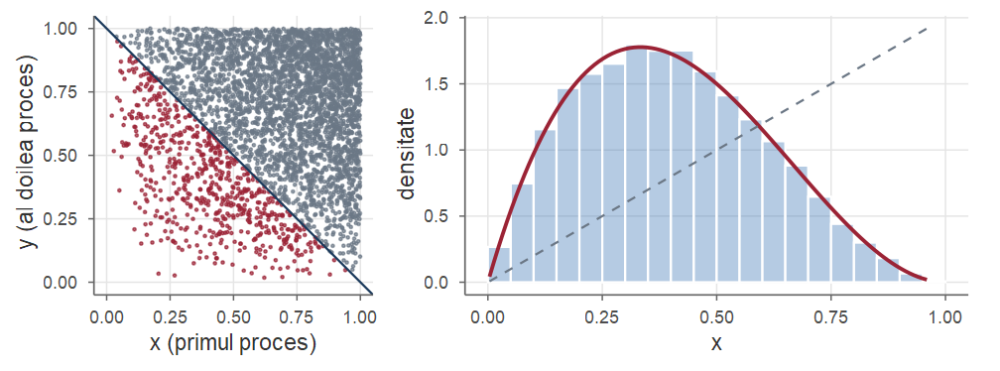
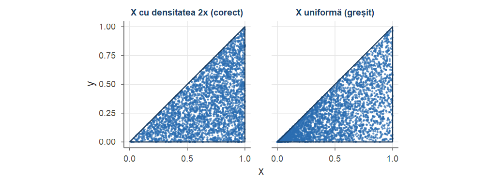
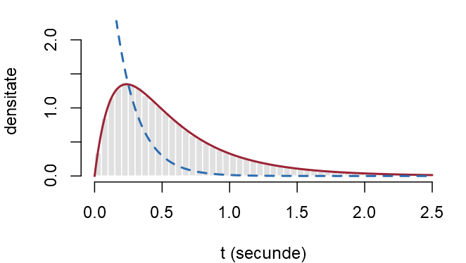
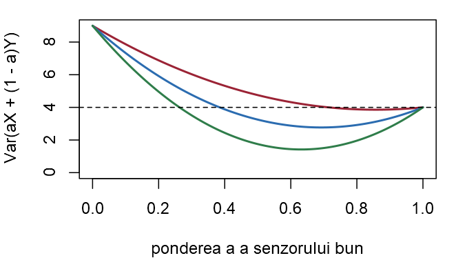

Probabilități și Statistică · Seminarul 6 (seminar și laborator)
Universitatea din București · Facultatea de Matematică și Informatică · 2026–2027
În aplicații observăm aproape întotdeauna mai multe mărimi deodată — puterea semnalului și numărul de retransmisii ale unui pachet, timpii de răspuns a două servere, numărul de fișiere sosite într-o oră și volumul lor total —, iar întrebările interesante privesc legătura dintre ele: ce aflăm despre una dacă o cunoaștem pe cealaltă și cât de puternic „variază împreună”.
Fiecare exercițiu: Seminar rezolvarea matematică, apoi Laborator rezolvarea în R.
La sfârșitul ședinței studentul trebuie să poată:
Din Cursul 6. Variabile discrete: probabilități și sume; variabile continue: densități și integrale.
matrix(v, nrow, byrow = TRUE, dimnames = ...) — tabelul repartiției comune ca matrice; P[i, j], P[i, ], P[, j] — o celulă, o linie, o coloană;rowSums(P), colSums(P) — marginalele; sweep(P, 1, pX, "/") — fiecare linie împărțită la suma ei (repartițiile \(Y\mid X=x\)); cu 2 în loc de 1, pe coloane;outer(pX, pY) — tabelul a două variabile independente cu marginalele date; outer(x, y, "+") — matricea sumelor \(x_i+y_j\);table(u, v) — tabel cu dublă intrare; sample(length(P), B, replace = TRUE, prob = as.vector(P)) și arrayInd — simularea celulelor;cov(x, y), cor(x, y) — covarianța și corelația empirice; tapply(y, x, mean) — estimarea lui \(\E[Y\mid X=x]\); cut(x, breaks) — clase pentru o variabilă continuă;mean(conditie) — probabilitatea unei regiuni;integrate(f, a, b)$value — integrală numerică; două apeluri imbricate: integrală dublă.Un laptop trimite pachete de date printr-o rețea fără fir. Pentru un pachet ales la întâmplare notăm cu \(X\) numărul de liniuțe de semnal afișate în momentul trimiterii (\(1\) = semnal slab, \(2\) = mediu, \(3\) = bun) și cu \(Y\) numărul de retransmisii de care a avut nevoie pachetul (\(0\), \(1\) sau \(2\)). Din jurnalul plăcii de rețea s-a estimat repartiția comună a vectorului \((X,Y)\), dată în tabelul alăturat.
\[ \begin{array}{c|ccc} X\backslash Y & 0 & 1 & 2\\ \hline 1 & 0.05 & 0.10 & 0.10\\ 2 & 0.15 & 0.15 & 0.05\\ 3 & 0.30 & 0.10 & 0 \end{array} \]
Seminar (a) Toate cele nouă numere sunt nenegative, iar suma lor este \(0.25+0.35+0.40=1\) (am adunat pe linii), deci tabelul definește o funcție de masă comună (Definiția 4 din Cursul 6).
Marginalele se obțin adunând pe linii, respectiv pe coloane (Definiția 5 din Cursul 6), și se trec pe marginile tabelului.
\[ \begin{array}{c|ccc|c} X\backslash Y & 0 & 1 & 2 & p_X(x)\\ \hline 1 & 0.05 & 0.10 & 0.10 & 0.25\\ 2 & 0.15 & 0.15 & 0.05 & 0.35\\ 3 & 0.30 & 0.10 & 0 & 0.40\\ \hline p_Y(y) & 0.50 & 0.35 & 0.15 & 1 \end{array} \]
De exemplu, \(p_Y(0)=\PP(Y=0)=0.05+0.15+0.30=0.50\): jumătate dintre pachete ajung din prima încercare. Probabilitatea unui eveniment este suma celulelor care îl compun: \[ \begin{aligned} \PP(X\le2,\ Y\ge1)&=0.10+0.10+0.15+0.05=0.40,\\ \PP(X+Y\ge4)&=p_{X,Y}(2,2)+p_{X,Y}(3,1)+p_{X,Y}(3,2)=0.05+0.10+0=0.15 . \end{aligned} \]
Seminar (b) Repartiția lui \(Y\) condiționată de \(X=x\) se obține luând linia \(x\) și împărțind-o la suma ei, \(\PP(X=x)\) (Definiția 7 din Cursul 6); pentru \(X\mid Y=y\) normalizăm coloana \(y\): \[ Y\mid X=1\sim\begin{pmatrix}0&1&2\\0.2&0.4&0.4\end{pmatrix},\quad Y\mid X=3\sim\begin{pmatrix}0&1&2\\0.75&0.25&0\end{pmatrix},\quad X\mid Y=2\sim\begin{pmatrix}1&2&3\\ \frac23&\frac13&0\end{pmatrix}. \] De exemplu \(\PP(Y=1\mid X=1)=\frac{0.10}{0.25}=0.4\) și \(\PP(X=1\mid Y=2)=\frac{0.10}{0.15}=\frac23\). Așadar, deși numai un sfert dintre pachete sunt trimise cu semnal slab, un pachet cu două retransmisii a fost trimis cu semnal slab cu probabilitatea \(\frac23\). Este formula lui Bayes (Propoziția 8 din Cursul 6): \[ \PP(X=1\mid Y=2)=\frac{\PP(X=1)\,\PP(Y=2\mid X=1)}{\PP(Y=2)}=\frac{0.25\cdot0.4}{0.15}=\frac23 . \]
Seminar (c) \(X\) și \(Y\) sunt independente dacă fiecare celulă este produsul marginalelor corespunzătoare (Definiția 9 din Cursul 6): \[ p_{X,Y}(x,y)=p_X(x)\,p_Y(y)\qquad\text{pentru toate perechile }(x,y). \] Aici \[ \PP(X=3,\ Y=2)=0,\qquad\text{dar}\qquad \PP(X=3)\,\PP(Y=2)=0.40\cdot0.15=0.06, \] deci variabilele nu sunt independente.
Același lucru se vede la (b): repartiția lui \(Y\) depinde de valoarea lui \(X\) — cu semnal slab, \(80\%\) dintre pachete au nevoie de retransmisii, cu semnal bun doar \(25\%\).
Laborator (d) Introducem tabelul ca matrice, linie cu linie (byrow = TRUE), și dăm nume liniilor și coloanelor cu dimnames. Vectorii x și y păstrează valorile celor două variabile. Marginalele sunt sumele pe linii (rowSums) și pe coloane (colSums).
Laborator Un eveniment = suma celulelor sale: P[x <= 2, y >= 1] păstrează liniile cu \(x\le2\) și coloanele cu \(y\ge1\); outer(x, y, "+") este matricea valorilor \(x+y\). Regăsim valorile de la (a).
Laborator sweep împarte fiecare linie (argumentul 1) sau coloană (2) la numărul corespunzător din vector: liniile lui PY_X sunt repartițiile \(Y\mid X=x\) de la (b), iar coloana "2" a lui PX_Y este \(X\mid Y=2\).
#> Y
#> X 0 1 2
#> 1 0.200 0.400 0.400
#> 2 0.429 0.429 0.143
#> 3 0.750 0.250 0.000
#> 1 2 3
#> 0.667 0.333 0.000Laborator Pentru independență comparăm tabelul cu cel pe care l-ar avea două variabile independente cu aceleași marginale, outer(pX, pY) (matricea produselor \(p_X(x)\,p_Y(y)\)). Cele două tabele diferă — cea mai mare diferență, \(0.1\), este în celula \((3,0)\) —, deci variabilele nu sunt independente.
sim_tabelLaborator În sfârșit, simulăm pachete. Celulele unei matrice sunt numerotate pe coloane, de la \(1\) la \(9\); alegem celule cu sample, cu probabilitățile as.vector(P), iar arrayInd transformă numărul celulei în perechea (linie, coloană). Funcția sim_tabel întoarce un tabel de date cu \(B\) perechi \((X,Y)\) și va fi refolosită.
Laborator Frecvențele relative ale celor nouă celule sunt apropiate de probabilitățile din tabel, iar dintre pachetele simulate cu două retransmisii aproximativ două treimi au fost trimise cu semnal slab.
Laborator Aceeași repartiție se poate simula în două etape, după regula de înmulțire \(p_{X,Y}(x,y)=p_X(x)\,p_{Y\mid X}(y\mid x)\): întâi \(X\) din marginala sa, apoi \(Y\) din linia corespunzătoare a matricei PY_X. Și de această dată frecvențele reproduc tabelul (cu abateri de ordinul unei sutimi, eșantionul fiind mai mic).
Se aruncă două zaruri echilibrate; fie \(U\) cel mai mic și \(V\) cel mai mare dintre cele două numere obținute (dacă zarurile arată același număr, \(U=V\)).
Determinați repartiția comună a vectorului \((U,V)\) și repartițiile marginale.
Determinați repartiția condiționată a lui \(U\) la \(V=4\) și media condiționată \(\E[U\mid V=4]\).
Arătați că \(\E[U\mid V=v]=\frac{v^2}{2v-1}\) pentru \(v=1,\dots,6\) și regăsiți \(\E[U]\) din aceste medii condiționate.
În R: construiți tabelul prin enumerarea celor \(36\) de rezultate și calculați mediile condiționate cu tapply, exact și pe un eșantion simulat.
Seminar (a) Cele \(36\) de rezultate \((z_1,z_2)\) sunt egal probabile (Exercițiul 2 din Seminarul 1), \(U=\min(z_1,z_2)\), \(V=\max(z_1,z_2)\). Pentru \(u<v\), evenimentul \(\{U=u,V=v\}\) conține două rezultate, \((u,v)\) și \((v,u)\); pentru \(u=v\), unul singur; pentru \(u>v\) este imposibil: \[ p_{U,V}(u,v)=\begin{cases}\frac{2}{36},&u<v,\\[1mm] \frac1{36},&u=v,\\[1mm] 0,&u>v.\end{cases} \]
\[ \begin{array}{c|cccccc|c} U\backslash V&1&2&3&4&5&6&\Sigma\\ \hline 1&1&2&2&2&2&2&11\\ 2&0&1&2&2&2&2&9\\ 3&0&0&1&2&2&2&7\\ 4&0&0&0&1&2&2&5\\ 5&0&0&0&0&1&2&3\\ 6&0&0&0&0&0&1&1\\ \hline \Sigma&1&3&5&7&9&11&36 \end{array} \]
În tabel sunt numărătorii (totul se împarte la \(36\)). Coloana \(v\) are \(v-1\) celule egale cu \(2\) și una egală cu \(1\), deci \(\PP(V=v)=\frac{2v-1}{36}\) (repartiția maximului, Exemplul 14 din Cursul 3); linia \(u\) dă \(\PP(U=u)=\frac{13-2u}{36}\).
Seminar (b) Normalizăm coloana \(v=4\), a cărei sumă este \(\frac7{36}\) (Definiția 7 din Cursul 6): \[ U\mid V=4\sim\begin{pmatrix}1&2&3&4\\ \frac27&\frac27&\frac27&\frac17\end{pmatrix},\qquad \E[U\mid V=4]=\frac{1\cdot2+2\cdot2+3\cdot2+4\cdot1}{7}=\frac{16}{7}\approx2.29 . \]
(c) La fel, pentru un \(v\) oarecare, \(U\mid V=v\) ia valorile \(1,\dots,v-1\) cu probabilitatea \(\frac{2}{2v-1}\) fiecare și valoarea \(v\) cu probabilitatea \(\frac1{2v-1}\). Din Definiția 11 din Cursul 6 și din \(1+2+\dots+(v-1)=\frac{v(v-1)}{2}\), \[ \E[U\mid V=v]=\frac{2\,[1+2+\dots+(v-1)]+v}{2v-1}=\frac{v(v-1)+v}{2v-1}=\frac{v^2}{2v-1}. \]
Seminar Mediile condiționate sunt \(1,\ \frac43,\ \frac95,\ \frac{16}7,\ \frac{25}9,\ \frac{36}{11}\) pentru \(v=1,\dots,6\): cu cât maximul este mai mare, cu atât ne așteptăm la un minim mai mare.
Media lui \(U\) se recompune din mediile condiționate, ponderate cu probabilitățile condițiilor (Propoziția 12 din Cursul 6): \[ \E[U]=\sum_{v=1}^6\E[U\mid V=v]\,\PP(V=v)=\sum_{v=1}^6\frac{v^2}{2v-1}\cdot\frac{2v-1}{36}=\frac{1+4+\dots+36}{36}=\frac{91}{36}\approx2.53 . \] Verificare directă, cu marginala lui \(U\): \[ \E[U]=\frac{1\cdot11+2\cdot9+3\cdot7+4\cdot5+5\cdot3+6\cdot1}{36}=\frac{91}{36}. \]
Laborator (d) Enumerăm rezultatele cu expand.grid, calculăm \(U\) și \(V\) (pmin, pmax), iar table(U, V) numără aparițiile fiecărei perechi. Regăsim marginalele (numărătorii) și repartiția \(U\mid V=4\).
#> 1 2 3 4 5 6
#> pU 11 9 7 5 3 1
#> pV 1 3 5 7 9 11
#> 1 2 3 4 5 6
#> 0.2857 0.2857 0.2857 0.1429 0.0000 0.0000tapplyLaborator tapply(U, V, mean): media lui \(U\) pe rezultatele cu \(V=v\), adică \(\E[U\mid V=v]\); pe un eșantion simulat, estimează mediile condiționate. Cele trei linii coincid (ultima, aproximativ); \(\E[U]\approx2.528\).
#> 1 2 3 4 5 6
#> exact 1 1.333 1.800 2.286 2.778 3.273
#> formula 1 1.333 1.800 2.286 2.778 3.273
#> simulare 1 1.336 1.802 2.293 2.794 3.267
#> [1] 2.528Un generator produce un număr întreg \(N\) repartizat uniform pe \(\{0,1,\dots,n-1\}\). Fie \(X=N\bmod 4\) restul împărțirii lui \(N\) la \(4\) (numărul format din ultimii doi biți ai lui \(N\)) și \(Y=\lfloor N/4\rfloor\) câtul (numărul format din ceilalți biți), astfel încât \(N=4Y+X\).
Pentru \(n=12\), determinați repartiția comună și marginalele. Sunt \(X\) și \(Y\) independente?
Aceeași întrebare pentru \(n=10\). Calculați \(\PP(X=0\mid Y=2)\) și comparați cu \(\PP(X=0)\).
În R: scrieți o funcție care măsoară abaterea unui tabel de la independență și aplicați-o pentru \(n=12\), \(n=10\) și pentru tabelele din Exercițiile 1 și 2. Ce se întâmplă dacă tabelul este estimat dintr-un eșantion simulat?
Seminar (a) Fiecărei perechi \((i,j)\), cu \(i\in\{0,1,2,3\}\) și \(j\in\{0,1,2\}\), îi corespunde exact un număr \(N=4j+i\in\{0,\dots,11\}\). Prin urmare toate cele \(12\) celule ale tabelului au probabilitatea \(\frac1{12}\), iar marginalele sunt uniforme: \[ \PP(X=i)=\frac3{12}=\frac14,\qquad \PP(Y=j)=\frac4{12}=\frac13 . \] Cum \[ \PP(X=i)\,\PP(Y=j)=\frac14\cdot\frac13=\frac1{12}=\PP(X=i,\ Y=j)\qquad\text{pentru toate perechile }(i,j), \] \(X\) și \(Y\) sunt independente (Definiția 9 din Cursul 6): câtul nu spune nimic despre rest.
Seminar (b) Pentru \(n=10\) numerele \(10=4\cdot2+2\) și \(11=4\cdot2+3\) nu mai pot apărea, deci celulele \((2,2)\) și \((3,2)\) au probabilitatea \(0\), iar celelalte zece au probabilitatea \(\frac1{10}\).
Acum \(\PP(X=3,Y=2)=0\ne0.2\cdot0.2\), deci \(X\) și \(Y\) nu sunt independente; de exemplu \(\PP(X=0\mid Y=2)=\frac{0.1}{0.2}=\frac12\), pe când \(\PP(X=0)=0.3\).
\[ \begin{array}{c|ccc|c} X\backslash Y & 0 & 1 & 2 & p_X(x)\\ \hline 0 & 0.1 & 0.1 & 0.1 & 0.3\\ 1 & 0.1 & 0.1 & 0.1 & 0.3\\ 2 & 0.1 & 0.1 & 0 & 0.2\\ 3 & 0.1 & 0.1 & 0 & 0.2\\ \hline p_Y(y) & 0.4 & 0.4 & 0.2 & 1 \end{array} \]
Valorile posibile ale perechii nu mai formează un „dreptunghi” complet, iar o celulă nulă cu marginale nenule exclude independența. Nici restul nu mai este uniform: \(0\) și \(1\) apar mai des decât \(2\) și \(3\). Concluzia practică: reducerea modulo \(4\) a unui număr aleator uniform dă două cifre uniforme și independente de rest numai dacă \(n\) este multiplu de \(4\) — de aceea generatoarele de numere aleatoare lucrează cu \(n=2^k\), caz în care toți biții sunt independenți.
Laborator (c) tabel: tabelul repartiției comune a doi vectori de valori egal probabile; abatere_indep: cea mai mare diferență dintre un tabel și produsul marginalelor sale — \(0\) numai pentru \(n=12\).
tabel <- function(a, b) table(a, b) / length(a) # repartiția comună
abatere_indep <- function(P) {
max(abs(P - outer(rowSums(P), colSums(P)))) # max |p - pX pY|
}
N12 <- 0:11; N10 <- 0:9
c(n12 = abatere_indep(tabel(N12 %% 4, N12 %/% 4)),
n10 = abatere_indep(tabel(N10 %% 4, N10 %/% 4)),
semnal = abatere_indep(P), zaruri = abatere_indep(PUV))#> n12 n10 semnal zaruri
#> 0.00000 0.04000 0.10000 0.03781Laborator Dacă tabelul provine din date, lucrurile sunt mai puțin clare. Pentru \(n=12\) abaterea empirică este mică, dar nu exact \(0\), fiindcă frecvențele relative fluctuează în jurul probabilităților; pentru \(n=10\) rămâne în jur de \(0.04\).
#> [1] 0.003611
#> [1] 0.04174Cât de mică trebuie să fie abaterea pentru a accepta independența pe baza unui eșantion este o întrebare de statistică, la care vom răspunde în a doua parte a cursului.
Două procese pornesc simultan pe un server și cer fracțiunile \(X\), respectiv \(Y\) din memoria disponibilă. Vectorul \((X,Y)\) are densitatea \[ f_{X,Y}(x,y)=c\,xy\quad\text{pentru }0\le x\le1,\ 0\le y\le1\qquad(\text{și }0\text{ în rest}). \]
Seminar (a) Integrala densității pe tot planul trebuie să fie \(1\) (Definiția 13 din Cursul 6): \[ 1=\int_0^1\!\!\int_0^1c\,xy\dd y\dd x=c\int_0^1x\dd x\cdot\int_0^1y\dd y=c\cdot\frac12\cdot\frac12=\frac c4,\qquad\text{deci } c=4 . \] Marginalele se obțin integrând după cealaltă variabilă (Propoziția 14 din Cursul 6): pentru \(x\in[0,1]\), \[ f_X(x)=\int_0^14xy\dd y=4x\cdot\frac12=2x,\qquad\text{și la fel}\qquad f_Y(y)=2y,\quad y\in[0,1]. \] Densitatea comună este produsul \(f_{X,Y}(x,y)=\big(2x\,\Ind_{[0,1]}(x)\big)\cdot\big(2y\,\Ind_{[0,1]}(y)\big)\) pe tot planul, deci, după criteriul de factorizare (Propoziția 21 din Cursul 6), \(X\) și \(Y\) sunt independente. Fiecare proces cere de regulă multă memorie: \(\E[X]=\int_0^1x\cdot2x\dd x=\frac23\).
Seminar (b) Regiunea \(\{x+y\le1\}\) din pătrat este triunghiul \(T\) cu vârfurile \((0,0)\), \((1,0)\) și \((0,1)\): pentru \(x\) fixat, \(y\) variază de la \(0\) la \(1-x\). Atunci \[ \begin{aligned} \PP(X+Y\le1)&=\int_0^1\!\!\int_0^{1-x}4xy\dd y\dd x=\int_0^12x(1-x)^2\dd x\\ &=2\int_0^1(x-2x^2+x^3)\dd x=2\Big(\frac12-\frac23+\frac14\Big)=\frac16 . \end{aligned} \] Triunghiul ocupă jumătate din aria pătratului, dar are probabilitatea doar \(\frac16\approx0.167\): densitatea nu este constantă, ci este concentrată spre colțul \((1,1)\), deci probabilitatea nu mai este un raport de arii.
Seminar (c) Pentru orice regiune \(B\) din plan, \[ \PP\big((X,Y)\in B\mid A\big)=\frac{\PP((X,Y)\in B\cap T)}{\PP(A)}=\iint_B\frac{f_{X,Y}(x,y)\,\Ind_T(x,y)}{\PP(A)}\dd x\dd y . \] Densitatea condiționată se obține deci „tăind” densitatea în afara lui \(T\) și renormalizând (ca în Definiția 16 din Cursul 6): \(f_{X,Y\mid A}(x,y)=\frac{4xy}{1/6}=24\,xy\) pentru \((x,y)\in T\) și \(0\) în rest. Marginala lui \(X\) și media sunt \[ \begin{aligned} f_{X\mid A}(x)&=\int_0^{1-x}24xy\dd y=12x(1-x)^2,\qquad x\in[0,1],\\ \E[X\mid A]&=\int_0^112x^2(1-x)^2\dd x=12\Big(\frac13-\frac24+\frac15\Big)=\frac25 . \end{aligned} \]
Seminar Am regăsit densitatea \(\BetaD(2,3)\) (Definiția 24 din Cursul 5). Știind că cererile au încăput, fracțiunea medie cerută de primul proces scade de la \(\frac23\) la \(\frac25\).
Formula \(24\,xy\) arată tot ca un produs, dar factorizarea nu are loc pe tot planul: mulțimea pe care densitatea este nenulă este un triunghi, nu un dreptunghi.
De exemplu, în jurul punctului \((0.8,0.8)\) densitatea comună este \(0\), deși ambele marginale sunt strict pozitive în \(0.8\): \[ f_{X,Y\mid A}(0.8,0.8)=0\ne f_{X\mid A}(0.8)\cdot f_{Y\mid A}(0.8). \] Deci, condiționat de \(A\), variabilele nu mai sunt independente: dacă primul proces a cerut mult, al doilea a cerut puțin.
Laborator (d) O integrală dublă = două apeluri integrate (Seminarul 5) imbricate: integrala interioară, calculată pentru fiecare \(x\) cu sapply, este integrată în exterior. Obținem \(1\) și \(\frac16\approx0.1667\).
int2 <- function(f, a, b, jos, sus) { # integrala dublă a lui f(x, y):
interior <- function(x) sapply(x, function(x0) # x de la a la b,
integrate(function(y) f(x0, y) + 0 * y, jos(x0), sus(x0))$value)
integrate(interior, a, b)$value # y de la jos(x) la sus(x)
}
f <- function(x, y) 4 * x * y
zero <- function(x) 0; unu <- function(x) 1
c(total = int2(f, 0, 1, zero, unu),
P_A = int2(f, 0, 1, zero, function(x) 1 - x))#> total P_A
#> 1.0000 0.1667Laborator \(F_X(x)=x^2\), deci \(X=\sqrt U\) (metoda inversă, Exercițiul 2 din Seminarul 5); \(Y\) la fel, independent.
#> P_A E_X cor
#> 0.165470 0.667369 -0.002395
#> n E_X_A cor_A
#> 16547.0000 0.4006 -0.6691Laborator Frecvența lui \(A\) este apropiată de \(\frac16\), media lui \(X\) de \(\frac23\), iar corelația empirică este practic nulă (independență). Perechile păstrate (o șesime, sub dreapta \(x+y=1\)) formează un eșantion din densitatea \(24\,xy\) pe triunghi: media lui \(X\) coboară la \(\frac25\), corelația devine puternic negativă (exact \(-\frac23\), vezi tema), iar histograma lui \(X\) urmează \(12x(1-x)^2\) (linia întreruptă: densitatea inițială \(2x\)). Este simularea prin respingere (Seminarul 8).

Vectorul \((X,Y)\) este repartizat uniform pe triunghiul \(T=\{(x,y)\mid 0\le y\le x\le1\}\), cu vârfurile \((0,0)\), \((1,0)\) și \((1,1)\).
Scrieți densitatea comună și determinați densitățile marginale. Sunt \(X\) și \(Y\) independente?
Determinați densitatea condiționată a lui \(Y\) la \(X=x\) și media condiționată \(\E[Y\mid X=x]\). Deduceți \(\E[Y]\).
Calculați \(\PP\big(X-Y\ge\frac12\big)\) și \(\PP(Y\le X^2)\).
În R: generați puncte uniforme în \(T\) prin respingere și în două etape și verificați (b) și (c). Un coleg propune algoritmul „aleg \(X\) uniform pe \([0,1]\), apoi \(Y\) uniform pe \([0,X]\)”. Este corect?
Seminar (a) Triunghiul are aria \(\frac12\), deci \(f_{X,Y}(x,y)=2\) pe \(T\) și \(0\) în rest (Definiția 15 din Cursul 6). Pentru \(x\in[0,1]\) fixat, punctele lui \(T\) cu abscisa \(x\) au \(y\in[0,x]\) (secțiunea verticală), iar pentru \(y\in[0,1]\) fixat, punctele cu ordonata \(y\) au \(x\in[y,1]\) (secțiunea orizontală). Din Propoziția 14 din Cursul 6, \[ f_X(x)=\int_0^x2\dd y=2x,\quad x\in[0,1],\qquad f_Y(y)=\int_y^12\dd x=2(1-y),\quad y\in[0,1]. \] Marginalele nu sunt uniforme: \(X\) ia mai des valori mari (secțiunile verticale sunt mai lungi spre dreapta), iar \(Y\) valori mici.
Variabilele nu sunt independente: \(f_X(x)f_Y(y)=4x(1-y)\) nu coincide cu \(f_{X,Y}\); de exemplu, în jurul punctului \((0.2,0.8)\), aflat în afara lui \(T\), densitatea comună este \(0\), iar produsul marginalelor este \(0.16\).
Seminar (b) Din Definiția 18 din Cursul 6, pentru \(x\in(0,1]\), \[ f_{Y\mid X}(y\mid x)=\frac{f_{X,Y}(x,y)}{f_X(x)}=\frac{2}{2x}=\frac1x,\qquad 0\le y\le x, \] adică \(Y\mid X=x\sim\Unif(0,x)\): știind abscisa, ordonata este uniformă pe secțiunea verticală (la fel ca pentru disc, Exemplul 10 din Cursul 6). Media unei uniforme este mijlocul intervalului (Propoziția 4 din Cursul 5), deci \(\E[Y\mid X=x]=\frac x2\) și \(\E[Y\mid X]=\frac X2\). Din legea mediei iterate (Teorema 28 din Cursul 6 a)), \[ \E[Y]=\E\big[\E[Y\mid X]\big]=\frac{\E[X]}{2}=\frac12\int_0^1x\cdot2x\dd x=\frac12\cdot\frac23=\frac13 , \] în acord cu calculul direct \(\E[Y]=\int_0^1y\cdot2(1-y)\dd y=1-\frac23=\frac13\).
Seminar (c) Densitatea fiind constantă, probabilitățile sunt rapoarte de arii.
Prin urmare \[ \PP\Big(X-Y\ge\frac12\Big)=\frac{1/8}{1/2}=\frac14,\qquad \PP(Y\le X^2)=\frac{1/3}{1/2}=\frac23 . \]
Laborator (d) Respingere: generăm puncte uniforme în pătrat și le păstrăm pe cele din \(T\). Două etape: generăm \(X\) cu densitatea marginală \(2x\) (adică \(X=\sqrt U\), ca în Exercițiul 4), apoi \(Y\) uniform pe \([0,X]\), conform regulii de înmulțire \(f_{X,Y}=f_X\,f_{Y\mid X}\). A treia variantă este propunerea colegului.
Laborator Primele două metode dau valorile teoretice \(\E[X]=\frac23\), \(\E[Y]=\frac13\), \(\frac14\) și \(\frac23\). Algoritmul colegului dă cu totul alte valori, deci nu produce un punct uniform în triunghi. Explicația este regula de înmulțire: repartiția condiționată \(Y\mid X=x\sim\Unif(0,x)\) este cea corectă, dar marginala lui \(X\) a fost luată uniformă în loc de \(2x\), așa că densitatea comună a punctului generat este \(1\cdot\frac1x=\frac1x\) pe \(T\), nu constantă.
#> E_X E_Y P1 P2
#> respingere 0.666 0.332 0.251 0.667
#> doua_etape 0.667 0.334 0.251 0.665
#> coleg 0.501 0.250 0.154 0.503Laborator Pentru densitatea \(\frac1x\), \(\PP\big(X-Y\ge\frac12\big)=\int_{1/2}^1\int_0^{x-1/2}\frac1x\dd y\dd x=\frac{1-\ln2}{2}\approx0.153\) — valoarea dată și de int2(function(x, y) 1 / x, 0.5, 1, zero, function(x) x - 0.5) și aproximată de simulare. Punctele colegului (dreapta) se îngrămădesc spre vârful \((0,0)\), unde secțiunile verticale sunt scurte. Morala: aceeași repartiție condiționată, combinată cu altă marginală, dă altă repartiție comună.

Pentru a reduce latența, o aplicație trimite aceeași cerere către două servere. Timpii de răspuns (în secunde) sunt independenți: \(X\sim\Exp(2)\) pentru primul server și \(Y\sim\Exp(4)\) pentru al doilea, adică în medie \(0.5\), respectiv \(0.25\) secunde. Fie \(L=\min(X,Y)\) momentul primului răspuns și \(M=\max(X,Y)\) momentul în care au sosit ambele răspunsuri.
Seminar Din independență, densitatea comună este produsul marginalelor (Propoziția 20 din Cursul 6): \(f_{X,Y}(x,y)=2e^{-2x}\cdot4e^{-4y}\) pentru \(x,y>0\). Reamintim că \(\PP(X>t)=e^{-2t}\) și \(\PP(Y>t)=e^{-4t}\) pentru \(t\ge0\) (Propoziția 7 din Cursul 5).
(a) Minimul depășește \(t\) exact atunci când ambii timpi depășesc \(t\), deci, pentru \(t\ge0\), \[ \PP(L>t)=\PP(X>t,\ Y>t)=\PP(X>t)\,\PP(Y>t)=e^{-2t}e^{-4t}=e^{-6t}. \] Prin urmare \(F_L(t)=1-e^{-6t}\) și \(f_L(t)=6e^{-6t}\) pentru \(t>0\): \(L\sim\Exp(6)\), ratele se adună.
Timpul mediu până la primul răspuns este \(\E[L]=\frac16\approx0.167\) secunde, față de \(0.25\) secunde dacă am folosi numai serverul rapid: o reducere cu o treime.
Seminar (b) Integrăm densitatea comună pe regiunea \(\{0<x<y\}\): pentru \(x\) fixat, \(y\) variază de la \(x\) la \(\infty\), iar \(\int_x^\infty4e^{-4y}\dd y=e^{-4x}\). Atunci \[ \PP(X<Y)=\int_0^\infty2e^{-2x}\Big(\int_x^\infty4e^{-4y}\dd y\Big)\dd x=\int_0^\infty2e^{-6x}\dd x=\frac26=\frac13 . \] În general, pentru ratele \(\lambda\) și \(\mu\), \(\PP(X<Y)=\frac{\lambda}{\lambda+\mu}\): serverul lent câștigă „cursa” o dată din trei.
(c) Maximul este cel mult \(t\) exact atunci când ambii timpi sunt cel mult \(t\): \[ F_M(t)=\PP(X\le t)\,\PP(Y\le t)=(1-e^{-2t})(1-e^{-4t})=1-e^{-2t}-e^{-4t}+e^{-6t},\qquad t\ge0, \] iar prin derivare \(f_M(t)=2e^{-2t}+4e^{-4t}-6e^{-6t}\) pentru \(t>0\).
Seminar Fiecare termen al lui \(f_M\) este densitatea unei exponențiale, a cărei medie o cunoaștem (Propoziția 8 din Cursul 5), deci \[ \E[M]=\int_0^\infty t\,f_M(t)\dd t=\frac12+\frac14-\frac16=\frac7{12}\approx0.583 . \] Mai simplu: \(L+M=X+Y\), iar din liniaritatea mediei \(\E[M]=\E[X]+\E[Y]-\E[L]=\frac12+\frac14-\frac16\).
(d) Timpul dintre cele două răspunsuri este \(M-L\), cu media \(\E[M]-\E[L]=\frac7{12}-\frac2{12}=\frac5{12}\approx0.417\) secunde. Interpretare prin lipsa de memorie (Exercițiul 8 din Seminarul 5): dacă primul a răspuns serverul rapid (probabilitate \(\frac23\)), timpul rămas până la răspunsul serverului lent este din nou \(\Exp(2)\), cu media \(\frac12\); dacă primul a răspuns serverul lent (probabilitate \(\frac13\)), mai așteptăm în medie \(\frac14\): \[ \E[M-L]=\frac23\cdot\frac12+\frac13\cdot\frac14=\frac13+\frac1{12}=\frac5{12}. \]
Laborator (e) Generăm timpii cu rexp; pmin și pmax calculează minimul și maximul pentru fiecare pereche. Valorile simulate sunt apropiate de \(\E[L]=\frac16\approx0.167\), \(\PP(X<Y)=\frac13\), \(\E[M]=\frac7{12}\approx0.583\) și \(\E[M-L]=\frac5{12}\approx0.417\).
Laborator Integrarea numerică, cu limite infinite (Inf), confirmă \(\E[M]=\int_0^\infty t\,f_M(t)\dd t=\frac7{12}\) și, cu funcția int2 din Exercițiul 4, \(\PP(X<Y)=\int_0^\infty\!\int_x^\infty8e^{-2x-4y}\dd y\dd x=\frac13\).
Laborator Histograma maximului urmează curba roșie \(f_M\), care pornește din \(0\) (este puțin probabil ca ambele răspunsuri să sosească foarte repede); linia albastră întreruptă: densitatea \(\Exp(6)\) a minimului.
par(mar = c(4, 4, 1, 1))
t <- seq(0, 2.5, by = 0.01)
hist(M, breaks = 100, freq = FALSE,
xlim = c(0, 2.5), ylim = c(0, 2.2),
col = "grey88", border = "white",
main = "", xlab = "t (secunde)",
ylab = "densitate")
lines(t, fM(t), lwd = 2, # maximul
col = culori[["rosu"]])
lines(t, dexp(t, 6), lty = 2, lwd = 2,
col = culori[["albastru"]])
Revenim la vectorul \((X,Y)\) din Exercițiul 1: \(X\) este numărul de liniuțe de semnal, iar \(Y\) numărul de retransmisii.
Calculați \(\E[X]\), \(\E[Y]\), \(\E[XY]\), \(\Cov(X,Y)\), \(\Var(X)\), \(\Var(Y)\) și \(\rho(X,Y)\). Interpretați semnul corelației.
Puterea semnalului, în dBm, este \(S=-90+15X\), iar timpul de livrare a pachetului, în milisecunde, este \(T=10+30\,Y\). Calculați \(\Cov(S,T)\) și \(\rho(S,T)\).
În R: scrieți o funcție care calculează mărimile de la (a) pentru un tabel oarecare. Apoi priviți problema „dinspre date”: dintr-un eșantion de \(n\) pachete calculați covarianța și corelația empirice, din formule și cu cov și cor, pentru \(n\in\{100,10^3,10^4,10^5\}\).
Seminar (a) Din marginalele găsite în Exercițiul 1, \[ \E[X]=1\cdot0.25+2\cdot0.35+3\cdot0.40=2.15,\qquad \E[Y]=0\cdot0.50+1\cdot0.35+2\cdot0.15=0.65 . \] Pentru \(\E[XY]\) adunăm \(x\,y\,p_{X,Y}(x,y)\) pe toate celulele (Teorema 10 din Cursul 6); celulele cu \(y=0\) nu contribuie: \[ \E[XY]=1\cdot1\cdot0.10+1\cdot2\cdot0.10+2\cdot1\cdot0.15+2\cdot2\cdot0.05+3\cdot1\cdot0.10=1.10 . \] Cu formula de calcul a covarianței (Definiția 31 din Cursul 6), \[ \Cov(X,Y)=\E[XY]-\E[X]\,\E[Y]=1.10-2.15\cdot0.65=1.10-1.3975=-0.2975 . \]
Seminar Varianțele: \(\E[X^2]=0.25+4\cdot0.35+9\cdot0.40=5.25\) și \(\E[Y^2]=0.35+4\cdot0.15=0.95\), deci \[ \Var(X)=5.25-2.15^2=0.6275,\qquad \Var(Y)=0.95-0.65^2=0.5275, \] iar coeficientul de corelație (Definiția 35 din Cursul 6) este \[ \rho(X,Y)=\frac{-0.2975}{\sqrt{0.6275\cdot0.5275}}=\frac{-0.2975}{0.5753}\approx-0.517 . \] Corelația este negativă și de intensitate medie: semnalul mai bun merge împreună cu mai puține retransmisii.
Faptul că \(\Cov(X,Y)\ne0\) arată încă o dată că variabilele nu sunt independente, deoarece independența ar implica necorelarea (Propoziția 33 din Cursul 6).
Seminar (b) Constantele adunate nu schimbă covarianța, iar factorii ies în față (Propoziția 34 din Cursul 6 b) și d)): \[ \Cov(S,T)=\Cov(-90+15X,\ 10+30Y)=15\cdot30\cdot\Cov(X,Y)=450\cdot(-0.2975)=-133.875 . \] Abaterile standard se înmulțesc cu aceiași factori, \(\mathrm{SD}(S)=15\,\mathrm{SD}(X)\) și \(\mathrm{SD}(T)=30\,\mathrm{SD}(Y)\), deci \[ \rho(S,T)=\frac{450\,\Cov(X,Y)}{15\,\mathrm{SD}(X)\cdot30\,\mathrm{SD}(Y)}=\rho(X,Y)\approx-0.517 . \] Covarianța depinde de unitățile de măsură (aici dBm \(\times\) ms), pe când corelația nu: de aceea intensitatea legăturii se judecă după \(\rho\), nu după covarianță.
cov_tabelLaborator (c) Funcția cov_tabel primește tabelul și valorile celor două variabile și întoarce mediile, varianțele, covarianța și corelația; outer(x, y) este matricea produselor \(x_iy_j\), deci sum(outer(x, y) * P) este \(\E[XY]\).
cov_tabel <- function(P, x, y) {
pX <- rowSums(P); pY <- colSums(P)
EX <- sum(x * pX); EY <- sum(y * pY)
EXY <- sum(outer(x, y) * P) # suma x * y * p(x, y)
VX <- sum(x^2 * pX) - EX^2; VY <- sum(y^2 * pY) - EY^2
c(EX = EX, EY = EY, VarX = VX, VarY = VY, Cov = EXY - EX * EY,
rho = (EXY - EX * EY) / sqrt(VX * VY))
}Laborator Prima linie confirmă calculele de la (a), a doua pe cele de la (b): covarianța s-a înmulțit cu \(450\), corelația a rămas \(-0.517\). A treia linie este pentru minimul și maximul a două zaruri (Exercițiul 2): \(\Cov(U,V)=\frac{1225}{1296}\approx0.945\) și \(\rho\approx0.479\) — de această dată o corelație pozitivă.
#> EX EY VarX VarY Cov rho
#> semnal 2.150 0.650 0.6275 0.5275 -0.2975 -0.5171
#> dBm_ms -57.750 29.500 141.1875 474.7500 -133.8750 -0.5171
#> zaruri 2.528 4.472 1.9715 1.9715 0.9452 0.4795Laborator În practică nu cunoaștem tabelul, ci avem date: perechile \((x_i,y_i)\) observate. Covarianța și corelația se estimează înlocuind mediile teoretice cu medii aritmetice — ceea ce fac cov și cor (cov împarte la \(n-1\), ca var). Valorile sunt apropiate de \(-0.2975\) și \(-0.517\).
set.seed(608)
d <- sim_tabel(1e5, P, x, y) # „jurnalul” a 100 000 de pachete
X <- d$X; Y <- d$Y
cov_n <- mean(X * Y) - mean(X) * mean(Y) # formula de calcul, pe date
cor_n <- cov_n / sqrt((mean(X^2) - mean(X)^2) * (mean(Y^2) - mean(Y)^2))
c(cov_formula = cov_n, cov = cov(X, Y), cor_formula = cor_n,
cor = cor(X, Y))#> cov_formula cov cor_formula cor
#> -0.2983 -0.2983 -0.5173 -0.5173Laborator Calculăm corelația empirică a primelor \(n\) perechi din jurnal, pentru \(n\in\{100,10^3,10^4,10^5\}\).
#> n_100 n_1000 n_1e4 n_1e5
#> -0.5891 -0.4875 -0.5093 -0.5173Estimarea se apropie de valoarea teoretică \(-0.517\) pe măsură ce \(n\) crește; cu numai \(100\) de pachete, corelația empirică se poate abate de la \(-0.517\) cu aproape o zecime.
Temperatura \(\mu\) dintr-o sală de servere este măsurată de doi senzori: \(X=\mu+\varepsilon_1\) și \(Y=\mu+\varepsilon_2\), unde erorile au media zero, \(\Var(X)=4\) (senzorul bun), \(\Var(Y)=9\) (senzorul slab), iar coeficientul de corelație este \(\rho=\rho(X,Y)\). Cele două măsurători se combină într-una singură, \(T_a=aX+(1-a)Y\), cu \(a\in[0,1]\).
Arătați că \(\E[T_a]=\mu\) pentru orice \(a\) și exprimați \(\Var(T_a)\) în funcție de \(a\) și \(\rho\).
Presupunem că senzorii sunt independenți. Calculați varianța mediei aritmetice \(\frac{X+Y}2\), apoi determinați ponderea \(a^*\) care minimizează \(\Var(T_a)\) și varianța minimă.
Reluați (b) pentru \(\rho=0.5\) (senzorii sunt afectați de aceleași perturbații) și pentru \(\rho=-0.5\).
În R: reprezentați grafic \(\Var(T_a)\) pentru cele trei valori ale lui \(\rho\), găsiți minimul numeric și verificați cazul \(\rho=0.5\) prin simulare.
Seminar (a) Din liniaritatea mediei, valabilă indiferent de dependența dintre senzori, \(\E[T_a]=a\mu+(1-a)\mu=\mu\): orice combinație cu ponderi de sumă \(1\) este „corectă în medie”. Pentru varianță folosim Propoziția 34 din Cursul 6 d) și f), cu \(\Cov(X,Y)=\rho\,\mathrm{SD}(X)\,\mathrm{SD}(Y)=6\rho\): \[ \begin{aligned} \Var(T_a)&=a^2\Var(X)+(1-a)^2\Var(Y)+2a(1-a)\Cov(X,Y)\\ &=4a^2+9(1-a)^2+12\rho\,a(1-a). \end{aligned} \]
(b) Pentru \(\rho=0\) și \(a=\frac12\): \[ \Var\Big(\frac{X+Y}2\Big)=\frac{4+9}{4}=3.25<4, \] deci media aritmetică este deja mai precisă decât senzorul bun folosit singur.
Seminar Putem face și mai bine: funcția \(v(a)=4a^2+9(1-a)^2\) are derivata \(v'(a)=8a-18(1-a)=26a-18\), care se anulează în \[ a^*=\frac{9}{13}\approx0.692,\qquad v(a^*)=4\cdot\frac{81}{169}+9\cdot\frac{16}{169}=\frac{468}{169}=\frac{36}{13}\approx2.77 \] (punct de minim, coeficientul lui \(a^2\) fiind pozitiv). Senzorul bun primește o pondere mai mare, proporțională cu inversul varianței: \(\frac{1/4}{1/4+1/9}=\frac9{13}\).
(c) Pentru \(\rho=0.5\): \(v(a)=4a^2+9(1-a)^2+6a(1-a)=7a^2-12a+9\), \(v'(a)=14a-12=0\), deci \[ a^*=\frac67\approx0.857,\qquad v(a^*)=9-\frac{36}{7}=\frac{27}{7}\approx3.86,\qquad v\Big(\frac12\Big)=4.75 . \] Câștigul față de senzorul bun (\(4\)) este acum mic, iar media aritmetică este mai slabă decât senzorul bun singur: erorile corelate pozitiv nu se mai compensează.
Seminar Pentru \(\rho=-0.5\): \(v(a)=4a^2+9(1-a)^2-6a(1-a)=19a^2-24a+9\), deci \[ a^*=\frac{12}{19}\approx0.632,\qquad v(a^*)=9-\frac{144}{19}=\frac{27}{19}\approx1.42 , \] mult sub varianța fiecărui senzor: erorile corelate negativ se compensează parțial.
În general, minimul se atinge pentru \[ a^*=\frac{\Var(Y)-\Cov(X,Y)}{\Var(X)+\Var(Y)-2\Cov(X,Y)} \] (când această valoare este în \([0,1]\)): ponderea senzorului bun crește odată cu corelația — \(0.632\), \(0.692\) și \(0.857\) pentru \(\rho=-0.5\), \(0\) și \(0.5\).
Laborator (d) Minimul lui \(\Var(T_a)\) pe o grilă fină, cu which.min: regăsim valorile de la (b) și (c).
var_comb <- function(a, rho, vX = 4, vY = 9) # Var(aX + (1 - a)Y)
a^2 * vX + (1 - a)^2 * vY + 2 * a * (1 - a) * rho * sqrt(vX * vY)
a <- seq(0, 1, by = 0.001)
sapply(c(rho_0 = 0, rho_0.5 = 0.5, rho_minus = -0.5), function(r) {
v <- var_comb(a, r)
c(a_optim = a[which.min(v)], var_min = min(v),
var_medie = var_comb(0.5, r))
})#> rho_0 rho_0.5 rho_minus
#> a_optim 0.692 0.857 0.632
#> var_min 2.769 3.857 1.421
#> var_medie 3.250 4.750 1.750Laborator Curbele (\(\rho=0.5\), \(0\), \(-0.5\), de sus în jos) pornesc din \(9\) (numai senzorul slab) și ajung în \(4\) (numai senzorul bun); cu cât corelația este mai mică, cu atât optimul coboară mai mult sub linia întreruptă.
par(mar = c(4, 4, 1, 1))
plot(a, var_comb(a, 0.5), type = "l",
col = culori[["rosu"]], lwd = 2,
ylim = c(0, 9),
xlab = "ponderea a a senzorului bun",
ylab = "Var(aX + (1 - a)Y)")
lines(a, var_comb(a, 0), lwd = 2,
col = culori[["albastru"]])
lines(a, var_comb(a, -0.5), lwd = 2,
col = culori[["verde"]])
abline(h = 4, lty = 2) # senzorul bun singur
Laborator Pentru simulare avem nevoie de erori corelate: pornind de la \(Z_1,Z_2\sim\Norm(0,1)\) independente, variabila \(\rho Z_1+\sqrt{1-\rho^2}\,Z_2\) are varianța \(1\) și corelația \(\rho\) cu \(Z_1\). Corelația empirică a erorilor este apropiată de \(0.5\), varianța combinației optime de \(\frac{27}7\approx3.86\), iar cea a mediei aritmetice de \(4.75\).
#> cor var_optim var_medie
#> 0.4989 3.8653 4.7638Considerăm două experimente. În primul, un zar echilibrat se aruncă de \(n\) ori; fie \(N_1\) numărul de apariții ale feței \(1\) și \(N_6\) numărul de apariții ale feței \(6\). În al doilea se aruncă două zaruri echilibrate; fie \(Z_1\) și \(Z_2\) numerele obținute, \(S=Z_1+Z_2\) suma și \(D=Z_1-Z_2\) diferența lor.
cov_tabel și abatere_indep; ilustrați prin simulare Exemplul 16 din Cursul 6.Seminar (a) Pentru aruncarea \(k\) fie \(A_k\) indicatorul evenimentului „apare fața \(1\)” și \(B_k\) indicatorul evenimentului „apare fața \(6\)”; atunci \(N_1=\sum_{k=1}^nA_k\), \(N_6=\sum_{l=1}^nB_l\) și \(A_k,B_k\sim\Bern\big(\frac16\big)\). Covarianța este liniară în fiecare argument (Propoziția 34 din Cursul 6 d) și e)), deci \[ \Cov(N_1,N_6)=\sum_{k=1}^n\sum_{l=1}^n\Cov(A_k,B_l). \] Pentru \(k\ne l\), indicatorii se referă la aruncări diferite, deci sunt independenți și \(\Cov(A_k,B_l)=0\). Pentru \(k=l\), fețele \(1\) și \(6\) nu pot apărea la aceeași aruncare, deci \(A_kB_k=0\) și \[ \Cov(A_k,B_k)=\E[A_kB_k]-\E[A_k]\,\E[B_k]=0-\frac16\cdot\frac16=-\frac1{36}. \] Rămân \(n\) termeni nenuli: \(\Cov(N_1,N_6)=-\frac n{36}\).
Seminar Cum \(N_1,N_6\sim\Bin\big(n,\frac16\big)\), avem \(\Var(N_1)=\Var(N_6)=n\cdot\frac16\cdot\frac56=\frac{5n}{36}\) (Secțiunea 9 din Cursul 3), deci \[ \rho(N_1,N_6)=\frac{-n/36}{5n/36}=-\frac15 . \] Corelația este negativă — numărul de aruncări fiind fixat, cu cât apare mai des fața \(1\), cu atât rămân mai puține aruncări pentru fața \(6\) — și nu depinde de \(n\).
(b) \(N_1+N_6\) numără aruncările la care apare \(1\) sau \(6\), deci \(N_1+N_6\sim\Bin\big(n,\frac13\big)\), cu varianța \(n\cdot\frac13\cdot\frac23=\frac{8n}{36}\). Din Propoziția 34 din Cursul 6 f), \[ \frac{8n}{36}=\Var(N_1)+\Var(N_6)+2\Cov(N_1,N_6)=\frac{10n}{36}+2\Cov(N_1,N_6),\quad\text{deci}\quad \Cov(N_1,N_6)=-\frac{n}{36}. \]
Seminar (c) Din nou prin liniaritate în fiecare argument, \[ \begin{aligned} \Cov(S,D)&=\Cov(Z_1+Z_2,\ Z_1-Z_2)=\Var(Z_1)-\Cov(Z_1,Z_2)+\Cov(Z_2,Z_1)-\Var(Z_2)\\ &=\Var(Z_1)-\Var(Z_2)=0, \end{aligned} \] deoarece cele două zaruri au aceeași repartiție. Deci \(S\) și \(D\) sunt necorelate.
Ele nu sunt însă independente: dacă \(S=12\), ambele zaruri arată \(6\) și \(D=0\), deci \[ \PP(S=12,\ D=1)=0,\qquad\text{deși}\qquad \PP(S=12)=\frac1{36}>0\ \text{ și }\ \PP(D=1)=\frac5{36}>0 . \] (De altfel, \(S\) și \(D\) au întotdeauna aceeași paritate.) Este aceeași situație ca în Exemplul 16 din Cursul 6: corelația „vede” doar legăturile liniare.
Laborator (d) Simulăm \(20\,000\) de serii de câte \(12\) aruncări și reținem pentru fiecare cele două numere de apariții. Valorile teoretice pentru \(n=12\) sunt \(-\frac{12}{36}\approx-0.333\), \(-0.2\) și \(\frac{8\cdot12}{36}\approx2.667\).
Laborator Pentru perechea \((S,D)\) refolosim enumerarea z a celor \(36\) de rezultate din Exercițiul 2 și funcțiile tabel, cov_tabel și abatere_indep. Covarianța și corelația sunt exact \(0\), dar abaterea de la independență nu este: tabelul lui \((S,D)\) nu este produsul marginalelor.
Laborator La fel se întâmplă în exemplul din curs, cu \(X\sim\Norm(0,1)\) și \(Y=X^2\). Corelația empirică este practic nulă, dar \(\PP(Y\le1)\approx0.68\), pe când \(\PP(Y\le1\mid X>1)=0\): informația despre \(X\) schimbă complet repartiția lui \(Y\).
#> cor P_Y_mic P_Y_mic_cond
#> -0.01589 0.68296 0.00000O corelație nulă nu demonstrează independența.
Pentru vectorul \((X,Y)\) din Exercițiul 1 vrem să prezicem numărul de retransmisii \(Y\) atunci când cunoaștem numărul \(X\) de liniuțe de semnal.
P, apoi estimați mediile și varianțele condiționate dintr-un eșantion simulat, cu tapply. Estimați la fel funcția \(x\mapsto\E[Y\mid X=x]\) pentru punctul uniform în triunghi din Exercițiul 5.Seminar (a) Folosim repartițiile condiționate \(Y\mid X=x\), adică liniile normalizate ale tabelului (Exercițiul 1 (b); pentru \(x=2\) linia \((0.15,0.15,0.05)\) împărțită la \(0.35\) dă \(\big(\frac37,\frac37,\frac17\big)\)). Din Definiția 11 din Cursul 6, \[ g(1)=0\cdot0.2+1\cdot0.4+2\cdot0.4=1.2,\qquad g(2)=\frac37+2\cdot\frac17=\frac57\approx0.714,\qquad g(3)=0.25 . \] \(g\) este descrescătoare: cu cât semnalul este mai bun, cu atât ne așteptăm la mai puține retransmisii. Variabila aleatoare \(\E[Y\mid X]=g(X)\) (Definiția 27 din Cursul 6) ia valoarea \(g(x)\) atunci când \(X=x\): \[ \E[Y\mid X]\sim\begin{pmatrix}1.2&\frac57&0.25\\[1mm] 0.25&0.35&0.40\end{pmatrix},\qquad \E\big[\E[Y\mid X]\big]=1.2\cdot0.25+\frac57\cdot0.35+0.25\cdot0.40=0.65 , \] adică exact \(\E[Y]\) (termenii sumei sunt \(0.30\), \(0.25\) și \(0.10\)), conform legii mediei iterate (Teorema 28 din Cursul 6 a)).
Seminar (b) Pentru fiecare \(x\) calculăm \(\E[Y^2\mid X=x]\) și scădem pătratul mediei condiționate: \[ \begin{aligned} \Var(Y\mid X=1)&=(0.4+4\cdot0.4)-1.2^2=0.56,\qquad \Var(Y\mid X=3)=0.25-0.25^2=0.1875,\\ \Var(Y\mid X=2)&=\Big(\frac37+\frac47\Big)-\frac{25}{49}=\frac{24}{49}\approx0.490 . \end{aligned} \] Cele două componente ale legii varianței totale (Teorema 28 din Cursul 6 b)) sunt \[ \begin{aligned} \E\big[\Var(Y\mid X)\big]&=0.56\cdot0.25+\frac{24}{49}\cdot0.35+0.1875\cdot0.40=0.14+0.1714+0.075=0.3864,\\ \Var\big(\E[Y\mid X]\big)&=1.2^2\cdot0.25+\frac{25}{49}\cdot0.35+0.25^2\cdot0.40-0.65^2=0.5636-0.4225=0.1411, \end{aligned} \] iar suma lor este \(0.3864+0.1411=0.5275=\Var(Y)\), valoarea din Exercițiul 7.
Seminar (c) Știind \(X=x\), eroarea pătratică medie a predicției \(g(x)\) este \(\E\big[(Y-g(x))^2\mid X=x\big]=\Var(Y\mid X=x)\). Mediind după \(X\) (legea mediei iterate), \[ \E\big[(Y-g(X))^2\big]=\E\big[\Var(Y\mid X)\big]=0.3864 . \] Fără nicio informație despre semnal, cea mai bună predicție constantă este media \(\E[Y]=0.65\), cu eroarea \(\Var(Y)=0.5275\) (Exercițiul 10 din Cursul 4).
Cunoașterea semnalului reduce deci eroarea cu \(0.1411\), adică cu \[ \frac{0.1411}{0.5275}\approx27\%: \] aceasta este partea din varianța lui \(Y\) „explicată” de \(X\). Conform Propoziției 29 din Cursul 6, nicio altă funcție de \(X\) nu dă o eroare mai mică.
PLaborator (d) Liniile matricei PY_X sunt repartițiile condiționate; pentru fiecare calculăm media și varianța (ca în Seminarul 4). Regăsim \(g(x)\), \(\Var(Y\mid X=x)\), \(\E[Y]=0.65\) și descompunerea \(0.3864+0.1411\).
#> [,1] [,2] [,3]
#> x 1.00 2.0000 3.0000
#> g 1.20 0.7143 0.2500
#> v 0.56 0.4898 0.1875
#> E_Y E_var var_E
#> 0.6500 0.3864 0.1411tapplyLaborator Pe date, tapply(Y, X, mean) calculează media lui \(Y\) pe grupe, după valoarea lui \(X\): estimăm \(g(x)\) și \(\Var(Y\mid X=x)\). Erorile pătratice medii ale celor două predicții sunt apropiate de \(0.3864\) și \(0.5275\).
#> 1 2 3
#> medii 1.2070 0.7156 0.2509
#> variante 0.5576 0.4896 0.1879
#> eroare_g eroare_const
#> 0.3866 0.5295Laborator Când variabila de condiționare este continuă, grupele se formează împărțind valorile ei în clase, cu cut. Pentru punctul uniform în triunghi (vectorii X2, Y2 din Exercițiul 5) am arătat că \(\E[Y\mid X=x]=\frac x2\).
#> (0,0.2] (0.2,0.4] (0.4,0.6] (0.6,0.8] (0.8,1]
#> medie_Y 0.068 0.157 0.253 0.352 0.453
#> x_pe_2 0.067 0.156 0.253 0.352 0.452În fiecare clasă, media valorilor lui \(Y\) este aproximativ jumătate din media valorilor lui \(X\) din acea clasă: punctele \((x,\text{media lui }Y)\) se așază pe dreapta \(y=\frac x2\).
Pe un server de stocare sosesc într-o oră \(N\sim\Pois(20)\) fișiere. Mărimile lor \(X_1,X_2,\dots\) (în MB) sunt independente între ele și de \(N\) și au repartiția \(\GammaD\big(4,\frac12\big)\), deci media \(\E[X_1]=8\) și varianța \(\Var(X_1)=16\) (Propoziția 23 din Cursul 5). Volumul total încărcat într-o oră este \(S=X_1+X_2+\dots+X_N\) (cu \(S=0\) dacă \(N=0\)).
Seminar (a) Știind \(N=n\), suma are un număr fix de termeni, \(S=X_1+\dots+X_n\), iar aceștia nu depind de \(N\). Din liniaritatea mediei și din faptul că varianțele variabilelor independente se adună (Propoziția 22 din Cursul 6), \[ \E[S\mid N=n]=n\,\E[X_1]=8n,\qquad \Var(S\mid N=n)=n\,\Var(X_1)=16n . \] Înlocuind \(n\) cu \(N\) (Definiția 27 din Cursul 6), obținem variabilele aleatoare \[ \E[S\mid N]=8N\qquad\text{și}\qquad \Var(S\mid N)=16N . \] Pentru \(N\sim\Pois(20)\), \(\E[N]=\Var(N)=20\) (Secțiunea 9 din Cursul 3).
Seminar (b) Din legea mediei iterate și legea varianței totale (Teorema 28 din Cursul 6), \[ \begin{aligned} \E[S]&=\E\big[\E[S\mid N]\big]=\E[8N]=8\cdot20=160\text{ MB},\\ \Var(S)&=\E\big[\Var(S\mid N)\big]+\Var\big(\E[S\mid N]\big)=\E[16N]+\Var(8N)\\ &=16\cdot20+64\cdot20=320+1280=1600, \end{aligned} \] deci \(\mathrm{SD}(S)=40\) MB. Sunt exact formulele din Propoziția 30 din Cursul 6: \(\E[S]=\E[N]\,\E[X_1]\) și \(\Var(S)=\E[N]\Var(X_1)+\Var(N)(\E[X_1])^2\) (cadrul este cel din Exemplul 15 din Cursul 6).
Primul termen, \(320\), provine din variabilitatea mărimilor fișierelor; al doilea, \(1280\), adică \(80\%\) din varianță, provine din variabilitatea numărului de fișiere. Dacă am trata numărul de fișiere ca fiind fix, egal cu \(20\), am obține \(\Var(S)=320\) și \(\mathrm{SD}(S)\approx17.9\) MB — mai puțin de jumătate din abaterea standard reală.
Seminar (c) Condiționăm la \(N\) și scoatem în afara mediei condiționate ceea ce este cunoscut (Teorema 28 din Cursul 6 a) și c)): \[ \E[NS]=\E\big[\E[NS\mid N]\big]=\E\big[N\,\E[S\mid N]\big]=\E[8N^2]=8\big(\Var(N)+(\E[N])^2\big)=3360 . \] Atunci \(\Cov(N,S)=3360-20\cdot160=160\) și \[ \rho(N,S)=\frac{160}{\sqrt{20}\cdot40}=\frac{2}{\sqrt5}\approx0.894 . \] Corelația este puternică (mai multe fișiere înseamnă un volum mai mare), dar nu egală cu \(1\), pentru că mărimile fișierelor variază.
Laborator (d) Simulăm în două etape: întâi numărul de fișiere din fiecare oră, apoi, pentru fiecare oră, suma a n mărimi generate cu rgamma. Valorile simulate sunt apropiate de \(160\), \(1600\), \(40\), \(160\) și \(0.894\).
Laborator Grupând orele după numărul de fișiere, tapply estimează \(\E[S\mid N=n]=8n\) (\(80,\dots,240\)) și, cu fluctuații mai mari, \(\Var(S\mid N=n)=16n\) (\(160,\dots,480\)). Simularea dă direct și cuantila căutată: într-o oră din o sută volumul depășește aproximativ \(262\) MB, iar pragul „medie plus două abateri standard”, \(240\) MB, este depășit în aproximativ \(3\%\) dintre ore.
#> 10 15 20 25 30
#> medie 78.75 120.0 160.3 200.2 240.9
#> varianta 159.35 233.3 321.6 391.4 509.9
#> 99% P_peste_240
#> 261.67753 0.03053Un ac de lungime \(l\le d\), aruncat la întâmplare pe o podea cu linii paralele aflate la distanța \(d\) una de alta, intersectează o linie cu probabilitatea \(p=\frac{2l}{\pi d}\) (Exemplul 7 din Cursul 6). (a) Pentru \(l=d=1\): dacă din \(n\) aruncări \(K\) intersectează o linie, ce estimare a lui \(\pi\) obținem și care este abaterea standard a frecvenței \(K/n\)? (b) Arătați că un ac lung (\(l>d\)) intersectează în medie tot \(\frac{2l}{\pi d}\) linii. (c) În R: simulați aruncarea acului și estimați \(\pi\); cum scade eroarea când \(n\) crește?
(a) \(p=\frac2\pi\approx0.6366\), deci \(\pi\approx\frac{2n}{K}\); \(K\sim\Bin(n,p)\), iar \(K/n\) are media \(p\) și abaterea standard \(\sqrt{p(1-p)/n}\) (\(\approx0.0048\) pentru \(n=10^4\)). (b) Împărțim acul în \(m\) bucăți scurte, cu indicatorii \(I_j\): \(\E[I_1+\dots+I_m]=m\cdot\frac{2l}{m\,\pi d}=\frac{2l}{\pi d}\) (liniaritatea mediei nu cere independență); pentru \(l=3d\), în medie \(\frac6\pi\approx1.91\) linii. (c) Simulăm poziția centrului (uniformă pe \([0,d)\)) și unghiul (uniform pe \([0,\pi)\)); eroarea estimării lui \(\pi\) scade ca \(\frac1{\sqrt n}\). Rezolvarea completă: nota seminarului (Seminarul 6).
Un sistem de echilibrare a încărcării trimite \(70\%\) dintre cereri către serverul \(A\) și \(30\%\) către serverul \(B\); timpul de răspuns (în ms) este aproximativ \(\Norm(50,10^2)\) pentru \(A\) și \(\Norm(80,15^2)\) pentru \(B\). S-a măsurat timpul de răspuns \(T\) al unei cereri, dar nu se știe ce server a tratat-o. (a) Determinați densitatea, media și varianța lui \(T\). (b) Calculați \(\PP(B\mid T=70)\). (c) Clasificăm cererea la \(B\) dacă \(\PP(B\mid T=t)>\frac12\): pentru ce valori ale lui \(t\) și cu ce probabilitate de a greși?
(a) \(f_T=0.7\,f_A+0.3\,f_B\) (Propoziția 17 din Cursul 6); \(\E[T]=59\) ms; din legea varianței totale, \(\Var(T)=137.5+189=326.5\), deci \(\mathrm{SD}(T)\approx18.1\) ms. (b) Formula lui Bayes în cazul hibrid (Propoziția 24 din Cursul 6), cu densități în locul probabilităților: \(\PP(B\mid T=70)=\frac{0.3\,f_B(70)}{0.7\,f_A(70)+0.3\,f_B(70)}\approx0.628\). (c) Pentru \(t>t^*\approx67.8\) ms; probabilitatea de eroare este \(0.7\,\PP(T>t^*\mid A)+0.3\,\PP(T\le t^*\mid B)\approx0.089\). În R: dnorm, pnorm și simulare în două etape. Rezolvarea completă: nota seminarului (Seminarul 6).
Fie \(Z_1,Z_2\sim\Norm(0,1)\) independente, \(\rho\in(-1,1)\) și \(X=Z_1\), \(Y=\rho Z_1+\sqrt{1-\rho^2}\,Z_2\) (repartiția normală bidimensională standard, Definiția 38 din Cursul 6). (a) Arătați că \(\E[Y]=0\), \(\Var(Y)=1\) și \(\rho(X,Y)=\rho\). (b) Arătați că \(\E[Y\mid X=x]=\rho x\) și \(\Var(Y\mid X=x)=1-\rho^2\). (c) Punctajele la două teste sunt \(T_1=70+10X\) și \(T_2=70+10Y\), cu \(\rho=0.6\). Ce punctaj ne așteptăm să obțină la al doilea test un student cu \(90\) la primul? Cu ce probabilitate obține peste \(90\)?
(a) \(\Var(Y)=\rho^2+(1-\rho^2)=1\) și \(\Cov(X,Y)=\rho\,\Var(Z_1)+\sqrt{1-\rho^2}\,\Cov(Z_1,Z_2)=\rho\). (b) Știind \(X=x\), \(Y=\rho x+\sqrt{1-\rho^2}\,Z_2\), deci \(Y\mid X=x\sim\Norm(\rho x,\,1-\rho^2)\): media condiționată este liniară în \(x\) (dreapta de regresie). (c) \(T_2\mid T_1=90\sim\Norm(82,8^2)\): ne așteptăm la \(82\) de puncte, iar \(\PP(T_2>90\mid T_1=90)=1-\Phi(1)\approx0.159\) — regresia către medie, consecință a faptului că \(|\rho|<1\). Rezolvarea completă: nota seminarului (Seminarul 6).
Repartiția sumei a două variabile aleatoare independente se obține prin formula de convoluție (Propoziția 42 din Cursul 6). (a) Se aruncă un zar cu \(4\) fețe și un zar cu \(6\) fețe, ambele echilibrate; determinați repartiția sumei \(Z\). (b) Fie \(X,Y\sim\Unif(0,1)\) independente; determinați densitatea sumei \(Z=X+Y\) și calculați \(\PP(Z\le1.5)\). (c) În R: scrieți o funcție care calculează repartiția sumei a două variabile discrete independente; verificați că \(\Pois(2)\) și \(\Pois(3)\) independente au suma \(\Pois(5)\).
(a) \(\PP(Z=z)=\frac{k_z}{24}\), cu \(k_z=1,2,3,4,4,4,3,2,1\) pentru \(z=2,\dots,10\) (formă de trapez). (b) \(f_Z(z)=z\) pentru \(0\le z\le1\) și \(2-z\) pentru \(1<z\le2\) (densitatea triunghiulară); \(\PP(Z\le1.5)=1-\frac{0.5^2}{2}=\frac78\). (c) tapply(outer(p, q), outer(x, y, "+"), sum): outer(p, q) este tabelul repartiției comune, iar tapply adună probabilitățile celulelor cu aceeași sumă. Rezolvarea completă: nota seminarului (Seminarul 6).
cov_tabel și abatere_indep.tabel), determinați \(\E[Y\mid X=x]\) și calculați \(\Cov(X,Y)\) și \(\rho(X,Y)\).int2.Răspunsuri: 1) \(X\sim\Bern(0.6)\); \(Y\): \(0.3,0.3,0.4\); \(Y\mid X=1\sim\big(\frac16,\frac13,\frac12\big)\); \(0.75\) și \(\frac43\); \(\rho\approx0.344\); nu. 2) \(\E[Y\mid X=x]=x+\frac12\); \(\Cov(X,Y)=\frac12\), \(\rho=\sqrt{2/3}\approx0.816\). 3) \(\frac2{15}\), \(-\frac2{75}\), \(-\frac23\); \(f_{Y\mid X}(y\mid x)=\frac{2y}{(1-x)^2}\) pe \([0,1-x]\), \(\E[Y\mid X=x]=\frac23(1-x)\). 4) \(\frac\pi4\).
Răspunsuri: 5) \(\Exp(6)\), cu media \(\frac16\); probabilitatea este \(\frac{1}{1+2+3}=\frac16\). 6) \(19\); \(3\); \(\frac{3}{\sqrt{24}}\approx0.612\). 7) \(\Cov(N_p,N_6)=\frac n{12}\), \(\rho=\frac{1}{\sqrt5}\approx0.447\) — corelație pozitivă, pentru că fața \(6\) este pară. 8) \(\E[Y]=\frac74\), \(\Var(Y)=\frac{77}{48}\approx1.604\).
rowSums(P), colSums(P), sweep(P, 1, pX, "/"); independență: P egal cu outer(pX, pY) (funcția abatere_indep);sum(x * pX), sum(outer(x, y) * P) (funcția cov_tabel); tabel din enumerare: table(a, b) / length(a) (funcția tabel);sample(length(P), B, replace = TRUE, prob = as.vector(P)) și arrayInd (funcția sim_tabel); în două etape: întâi \(X\), apoi \(Y\mid X\); prin respingere: X[A], Y[A];integrate imbricate (funcția int2);cov(x, y), cor(x, y); tapply(y, x, mean) estimează \(\E[Y\mid X=x]\); cut(x, breaks) pentru o variabilă continuă; pmin, pmax, quantile(S, 0.99).Nota seminarului: Seminarul 6; rezultatele folosite: Cursul 6. Vectori aleatori, covarianță și medie condiționată: (Blitzstein and Hwang 2019, cap. 7 și 9), (Bertsekas and Tsitsiklis 2008, cap. 2–4), (Ross 2014, cap. 6–7), (Chan 2021, cap. 5); simulări în R: (Wagaman and Dobrow 2021).
Probabilități și Statistică · Seminarul 6 — Vectori aleatori